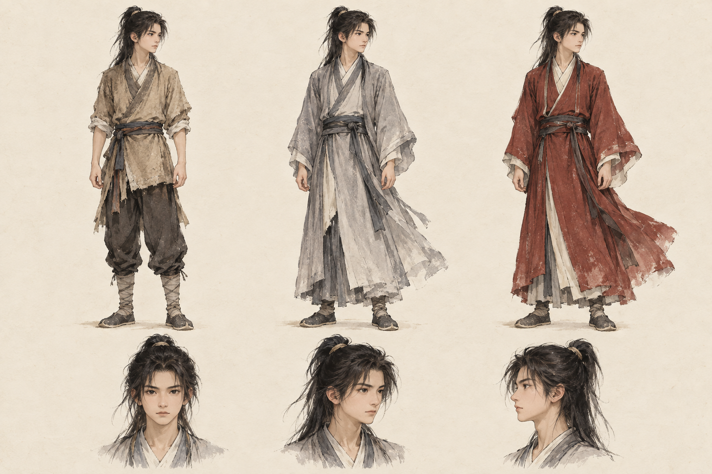
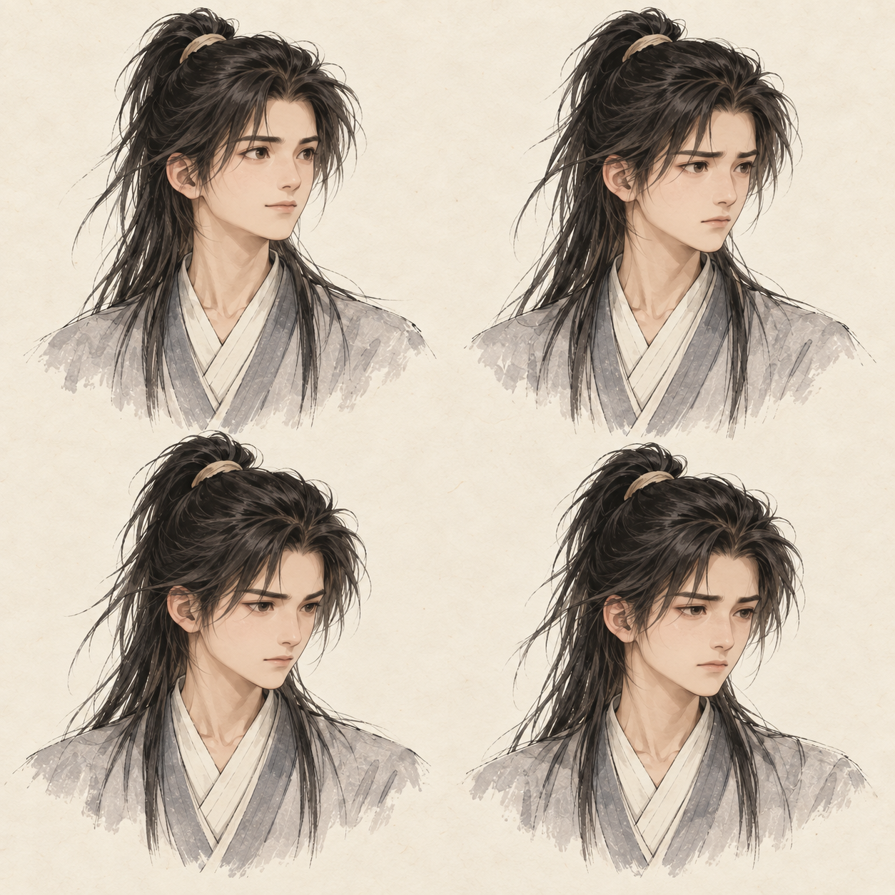
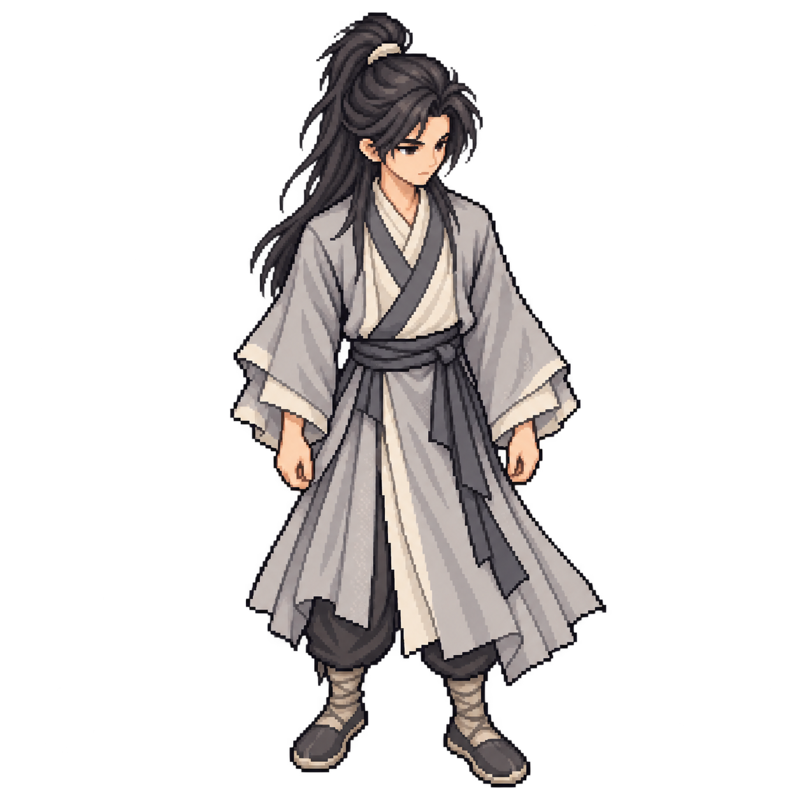
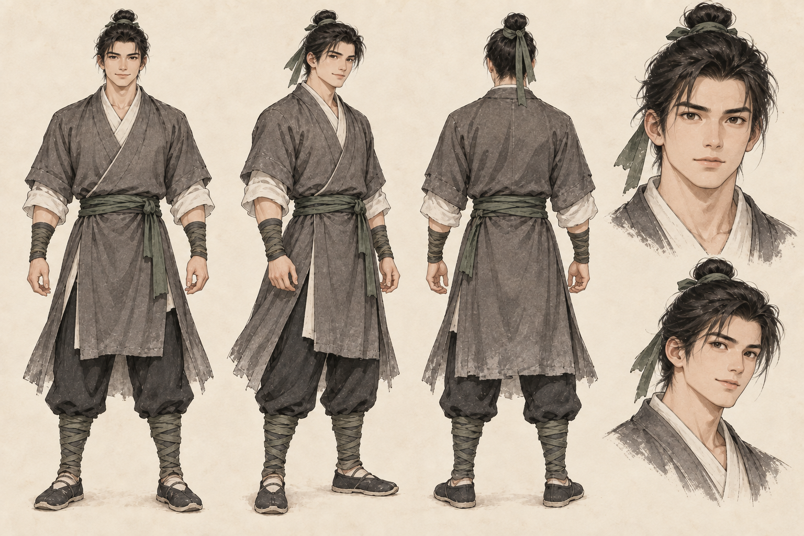
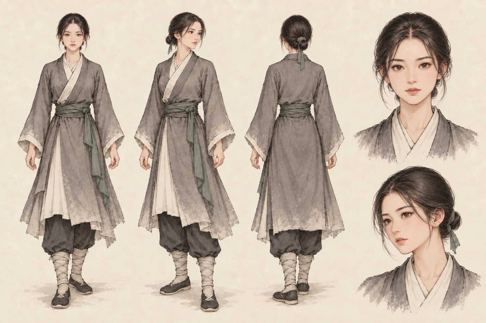

Thư viện tạo hình nhân vật
TuTiên: MMORPG tu luyện, combat chủ động và idle hỗ trợ. GDD 0.28 cho chọn Vương Lâm, Tư Đồ Nam hoặc Lý Mộ Uyển từ đầu; cùng Hằng Nhạc–Ngưng Khí, phân hóa từ Trúc Cơ. Nhân vật pixel trên nền stylized 2D, portrait/truyện giữ tranh mực/giấy cổ. Vương Lâm chibi làm chuẩn. Lý Mộ Uyển native-v5 đã chấp nhận cho bản thử; hai đệ tử và Tư Đồ Nam chibi mới còn chờ đánh giá. Các bảng tạo hình trước giữ tham chiếu.
Thi triển R01 · bộ ba, bốn hướng
Xem pose cạnh nhân vật native · Nguồn/prompt · Kiến trúc và debug skill.
36 clip / 300 frame thi triển, 10 FX R01 gốc. ART mới chờ đánh giá hình; giữ frame/collider đứng và đi hiện hành.
Dàn chibi hiện hành · nguồn từ preview 0.5.1
Xem năm nhân vật cùng hướng và pose · Mở gallery đang chạy · Thử di chuyển trên map.
20 frame/mẫu, bốn hướng, frame 64 × 96. Lý Mộ Uyển: mặt mềm, tóc xanh đen buộc thấp, áo lavender hai lớp/cổ ngà. Tư Đồ Nam: linh thể đứng/lướt, chân duỗi và khoảng khuyết ở ngực. Hai đệ tử mới dùng trên sân online.
Hồ sơ Vương Lâm ghi nguồn tiểu thuyết và diện mạo riêng. Trang animation lịch sử dùng 28 frame native 64 × 96, palette 24 mục; main hiện mặc định chibi 20 frame.
Phạm vi nhân vật đề xuất
Thử hai sprite Vương Lâm: nét mịn và pixel art · Sau so sánh, người phát triển chọn nhân vật pixel trên nền stylized 2D. Bộ native thử dùng chung frame 64 × 96 và điểm chân; nhận diện đệ tử cần đánh giá riêng.
| Phạm vi | Số lượng |
|---|---|
| Nhân vật người chơi trong thiết kế | Chọn Vương Lâm, Tư Đồ Nam hoặc Lý Mộ Uyển từ đầu; chưa triển khai luồng chọn/tiến trình online |
| Catalog preview local | 5 bộ chibi/100 frame + Vương Lâm trước 36 để đối chiếu = 6 bộ/136 frame |
| Sân online hiện có | 2 mẫu đệ tử chibi kỹ thuật, 40 frame; tên tạm và di chuyển |
| Hồ sơ nguồn trước | Các concept/tĩnh và dự toán NPC A → B giữ lịch sử; mốc nguyên tác không khóa quyền chọn bộ ba |
Bộ ba trọng tâm · Nhận diện trước NPC phụ
Chân dung UI 512/160/64: Vương Lâm áo xám, Tư Đồ Nam linh thể, Lý Mộ Uyển áo tím; PNG/WebP, một biểu cảm cơ bản mỗi người, hình mới chờ đánh giá. Kế hoạch động tác ghi phần đã có và phần cần vẽ.
Mở trang tạo hình và mẫu pixel của Vương Lâm, Tư Đồ Nam, Lý Mộ Uyển. Hai nhận diện mới dùng nguyên tác làm căn cứ, mặt/tóc/đường áo là thiết kế riêng của game.
Gói trước chibi: Tư Đồ Nam đứng v3 giữ mặt/tóc v2, linh thể ít sương; Lý Mộ Uyển có áo tím/đỏ và tóc buộc đuôi, mỗi người bốn mẫu tĩnh. Bộ chibi hiện hành của cả ba có đứng/đi hoặc lướt bốn hướng; Lý Mộ Uyển native-v5 đã chọn, portrait v1 cần đồng bộ.
Hồ sơ và nguồn chương · Nguồn/prompt. Duyệt nguồn tại mốc trước: Lý Mộ Uyển v1 đã chấp nhận; Tư Đồ Nam đứng v3 tạm chấp nhận. Bộ chibi Tư Đồ Nam vẫn chờ đánh giá.
Hai đệ tử · Bộ 28 frame trước chibi
Mở trang so sánh cùng Vương Lâm và thử hai mẫu trên sân: đổi hướng, dừng ở từng frame, xem 1×/2×/4×/8×, đổi nền và chọn mẫu thử đi.

Đệ tử nữ · Búi thấp

56 frame tổng, cùng palette 24 mục, frame 64 × 96 và điểm chân (32, 88); nhận diện/motion đệ tử còn chờ đánh giá. Hồ sơ · Nguồn/prompt.
Vương Lâm · Chibi đứng và đi bốn hướng
Mở preview Three.js, chọn Thử trên map và dùng WASD hoặc nút hướng. Bộ này được chọn mặc định; sau sửa pose Đông cuối người phát triển phản hồi khá ổn và yêu cầu áp dụng tỷ lệ cho dàn tiếp theo.

20 frame, 64 × 96; điểm chân (32, 88), palette 24 mục. Nguồn/prompt imagegen tích hợp · JSON · Kiểm tra.
Vương Lâm · Bộ 28 frame lịch sử
Mở trang animation và thử bước trên sân: xem bốn hướng, dừng ở từng frame, phóng nguyên lần và đổi nền.

Frame 64 × 96; điểm chân (32, 88); palette 24 mục gồm trong suốt. Nhận diện đã duyệt, motion là bản đầu. Spec sprite · JSON · Nguồn/prompt.
Vương Lâm v2 · Tạo hình và trang phục

Ba bộ đồ thường giữ cùng nhận diện. Hàng dưới thể hiện góc mặt/tóc; biến thể cảnh hang ở dưới phải được tách khỏi trang phục thường.
Mặt/tóc và đường cắt áo là thiết kế riêng theo brief; nhận diện đã được người phát triển duyệt. Prompt đã dùng · Input và trạng thái.
Xem bảng nhập môn v1 để so sánh

Nguồn nghiên cứu trước hồ sơ truyện; giữ nguyên ảnh và prompt v1.
Vương Lâm v2 · Biểu cảm

Thứ tự: trên trái hy vọng; trên phải thận trọng; dưới trái tập trung; dưới phải mệt. Biểu cảm nhẹ để giữ nét thiếu niên và nhận diện.
Bảng nghiên cứu; chưa tách thành portrait dùng trong game. Prompt đã dùng.
Vương Lâm v2 · Mẫu pixel đứng áo xám

Giữ camera/tư thế của mẫu pixel v1, đối chiếu nhận diện và bộ áo xám với bảng v2. PNG có alpha trong suốt; màu giấy phía sau do trang xem đặt.
Nguồn nhận diện 1.254 × 1.254 được giữ; bộ native xuất riêng trong trang animation. Prompt đã dùng · So sánh phong cách v1 · Nền map cũ đã xóa; dùng editor cho map mới.
Đệ tử nam v2 · Avatar thử nghiệm

Mặt rộng và hàm rõ hơn, tóc búi cao gọn, vai rộng hơn Vương Lâm; áo xám và đai xanh trầm. Tên do người chơi đặt, mẫu không thay đổi chỉ số.
Nhân vật do game bổ sung; nhận diện v2 còn chờ đánh giá. Prompt đã dùng · Xem pixel.
Đệ tử nữ v2 · Avatar thử nghiệm

Búi thấp sau gáy nhất quán giữa các góc, dáng gọn và mặt oval rộng. Cùng chất liệu và cấp trang bị với mẫu nam; mẫu hình không đổi chỉ số tu luyện.
Nhân vật do game bổ sung; nhận diện v2 còn chờ đánh giá. Prompt chỉnh tóc · Prompt đầu · Xem pixel.

Tạo bằng imagegen tích hợp. Hồ sơ: Nhân vật và brief · Điều chỉnh online.